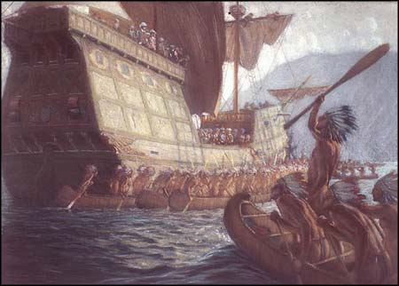
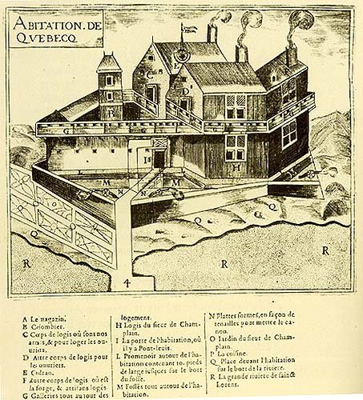
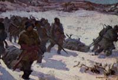
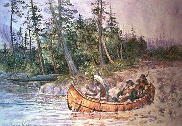

| Poste de traite de fourrures |
| Lors de ses voyages Cartier voit bien
qu'il y a des fourrures au Canada, sans plus. Mais du temps de
Champlain le commerce des fourrures est devenu très
lucratif. Le roi de France permet à des hommes d'affaires,
regroupés en compagnie privée, d'avoir le monopole de ce commerce,
en contrepartie d'une partie des bénéfices. La compagnie doit
aussi voir à l'établissement de colons et de missionnaires pour
l'évangélisation des amérindiens. Champlain est à l'emploi de
De Monts, un marchand huguenot. Après l'échec de
l'implantation d'une colonie en Acadie, De Monts demande à Champlain
d'aller à l'intérieur du continent y installer un poste de
traite. Cela exige beaucoup de capitaux, une exploitation plus
soutenue des richesses naturelles, une habitation stable et un personnel
en permanence.
 Arrivée de Champlain en 1608 De Monts fait construire en 1608 l'Abitation à ses frais et reste propriétaire de Québec jusqu'en 1613. Il est le vrai fondateur de Québec. Champlain espère toujours trouver la route des Indes et pense pouvoir, du haut du Cap-aux-Diamants, contrôler le commerce avec l'Asie. |
|

Champlain s'installe donc à Québec avec vingt-sept hommes, des maçons, charpentiers et hommes de métier à l'emploi de la compagnie. On les appelle les hivernants. Champlain prend soin d'amasser des vivres, en plus de construire l'abitation: un petit fort en bois avec une enceinte protégée par des canons. Construction imposante pour l'époque et la région, il y a trois corps de logis, un pour les artisans, un pour Champlain et des entrepôts pour les produits de subsistance et de commerce. Les Français sèment avec succès du blé dès la première été. Les pêches sont miraculeuses, la sauvagine et le caribou abondent. |
| Survivre à l'hiver
Les recherches géologiques du20ème siècle ont prouvé qu'il y a eu dans le nord de l'Amérique un mini ère glaciaire d'une durée de 300 ans, soit de 1500 à 1820. Cela se serait traduit par des hivers rigoureux et plus de pluie en été. |
| Le climat est rude en
Nouvelle-France, le premier hiver de Champlain à Québec est
impitoyable: vingt personnes sur vingt-huit décèdent, treize de
scorbut, sept de dysenterie. Champlain est dépourvu, il ne connaît
pas le remède contre le scorbut que Cartier avait reçu des
Amérindiens. Cet établissement est-il voué à l'échec comme
tous les autres en Nouvelle-France jusqu'à date (Tadoussac,
Acadie,...)?
Survivre à l'hiver devient la seule priorité. Sans cela, aucune colonisation permanente n'est possible. Les Français comprennent qu'ils doivent observer et imiter les Amérindiens. Aussi creusent-ils des fosses pour préserver le maïs, les fruits et les légumes. Ils se couvrent d'un manteau de fourrure et d'un casque de poils, marchent avec des raquettes et vont à la chasse et à la pêche. Ce nouveau mode de vie les aide beaucoup à s'acclimater et à vaincre l'hiver. Les hivers de 1610 et 1611 ne font aucune victime si bien que Champlain comprend que c'est la pauvreté de l'alimentation qui tue et non le froid.  Québec n'en demeure pas moins qu'un comptoir commercial où les Amérindiens viennent échanger les fourrures contre de la marchandise. Personne ne veut réellement s'y établir. |
| Le premier colon |
| Il faut attendre la venue de Louis
Hébert et sa famille pour que Québec devienne une véritable
colonie. Champlain connaissait Louis Hébert depuis un séjour
commun en Acadie. Il le persuade de venir s'installer à Québec
en 1617. Louis Hébert est engagé par la Compagnie à qui il doit
vendre le surplus de sa récolte. Étant apothicaire, il doit
aussi soigner gratuitement les autres engagés. Il ne peut faire
le commerce des fourrures, la compagnie ne voulant aucune concurrence.
Champlain compte sur son exemple pour promouvoir l'arrivée de d'autres
colons.
 En 1618 Champlain présente " l'inventaire des richesses naturelles du Canada " à la chambre du commerce de France. Richelieu, ministre du roi Louis XIII, veut une compagnie catholique. Il pousse la fondation de la Compagnie des Cent Associés en 1627. Cette compagnie puissante prend en charge le Canada. Pourtant la même année aucun bateau n'atteint la colonie, laquelle est complètement dépendante de la France pour sa survie car il n'y a pas assez de colons pour produire des aliments. |
| Pourquoi si peu de colons? |
| La compagnie n'y trouve pas son avantage:
les indiens ramènent suffisamment de fourrures au poste de
traite. Quant aux missionnaires, ils préfèrent quelques colons
bons catholiques qui donnent l'exemple aux Amérindiens qu'ils veulent
convertir, plutôt que beaucoup de colons dont certains pourraient être
de mauvais sujets. La population de l'Habitation ne dépassera
jamais 100 personnes.
La France du 17ème siècle est le pays le plus populeux d'Europe et on y pense que plus un pays est peuplé, plus il est puissant car il y est plus facile de lever une armée. La France ne veut pas se priver de population, cela sera toujours sa grande crainte jusqu'au 18ème siècle. Alors que dans les colonies anglaises la population est déjà de 5,000, puis de 10,000 habitants (la ville de Boston est fondée d'un seul coup par l'arrivée de 2,000 personnes), la population de Québec augmente au compte goutte. Dans la course aux colonies la France est incapable de gagner parce qu'elle exclue les protestants, auxquels elle mène une guerre interne, et que, pour elle, le Canada n'est qu'une entreprise de commerce de fourrures qui ne nécessite que peu de gens. Elle ne vise pas à former un noyau colonial fort, alors que les Anglais en Nouvelle-Angleterre et les Hollandais dans le New-York, y réussissent. |
| Les Anglais attaquent |
| La guerre éclate entre la France et
l'Angleterre en 1627 et le roi d'Angleterre, Charles 1er, en profite
pour s'enrichir en mettant la main sur le commerce des fourrures.
Il charge les frères Kirk de s'emparer des postes de traite de
Nouvelle-France. Leur première tentative de 1628
échoue, mais ils reviennent en 1629. Ils s'emparent de
Tadoussac qui est un avant-port de Québec (trouvant la navigation
jusqu'à Québec trop risqué, les navires s'y arrêtent et les gens
continuent leur voyage en barque). Les Anglais brûlent les
récoltes, capturent des Jésuites, massacrent des
Gaspésiens. Puis, meilleurs navigateurs que les Français, ils se
présentent devant Québec. Champlain n'en croit pas ses
yeux: lui-même n'a jamais osé remonter le St-Laurent au-delà de
Tadoussac. Le 19 juillet 1629, il doit se résigner à se rendre
aux Anglais.
La tâche des Frères Kirk n'est pas difficile car les hivers 1628 et 1629 ont beaucoup affaibli la population. Les bateaux destinés à approvisionner la population avaient été interceptés par les Anglais et la famine sévissait. Certains s'étaient réfugiés chez les Algonquins pour ne pas mourir de faim, d'autres en étaient réduits à manger des racines. Aussi n'eurent-ils pas la force de résister aux frères Kirk.
La famille de Louis Hébert, et quelques interprètes, décident de rester au pays. Le 24 juillet 1629, voyant partir de Québec leurs compatriotes, ils pensent que c'est la fin du grand rêve de Champlain. Ce dernier apprend au cours de la traversée, en croisant un autre navire, que la France est victorieuse et que la guerre était terminée lorsque l'Angleterre s'est emparé de Québec. Mais il est trop tard... presque la totalité de la population est à bord avec lui. Trois ans plus tard, la colonie d'Amérique du Nord est restituée à la France par le traité de Saint-Germain-en-Laye. |
| Les vrais débuts de Québec |
|
Reprise de Québec par Champlain La Compagnie des Cent Associés commence alors son travail de colonisation. Des entrepreneurs comme Robert Giffard et les frères Juchereau recrutent, peu à peu, des colons. En 1635 la Nouvelle-France compte quatre cents habitants. Quelques infrastructures apparaissent, des missionnaires fondent le Collège des Jésuites, différentes communautés religieuses s'installent, dont des Ursulines et des Hospitalières qui se consacrent à l'éducation et au soin des malades. Pendant tous ces premiers balbutiements de Québec, Mathieu Choret, né vers 1620 en France, est un jeune enfant. Il entre en scène au milieu des années 1640. Québec commence alors à peine son développement, mais il ne s'arrêtera plus jamais. |